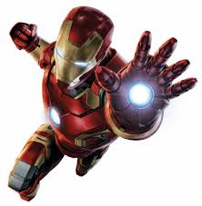

Major Iron Man stories include "Demon in a Bottle" (1979), "Armor Wars" (1987-1988), "Extremis" (2005), and "Iron Man 2020" (2020). He is also a leading character in the company-wide stories Civil War (2006-2007), Dark Reign (2008-2009), and Civil War II (2016). Additional superhero characters have emerged from Iron Man's supporting cast, including James Rhodes as War Machine and Riri Williams as Ironheart, as well as reformed villains, Natasha Romanova as Black Widow and Clint Barton as Hawkeye. Iron Man's list of enemies includes his archenemy, the Mandarin, various supervillains of communist origin, and many of Stark's business rivals.
